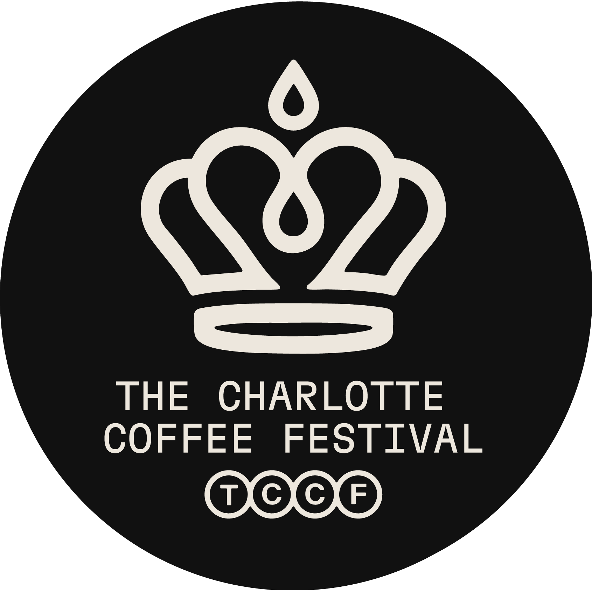
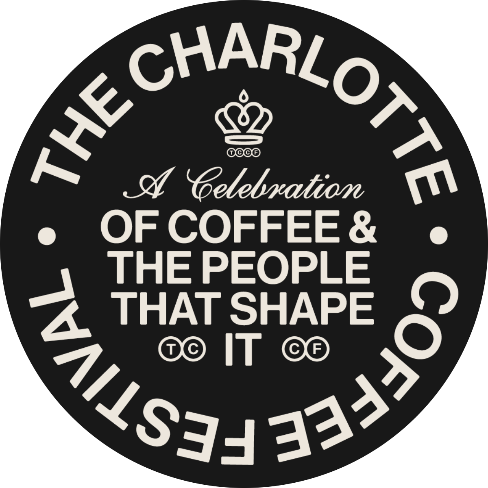
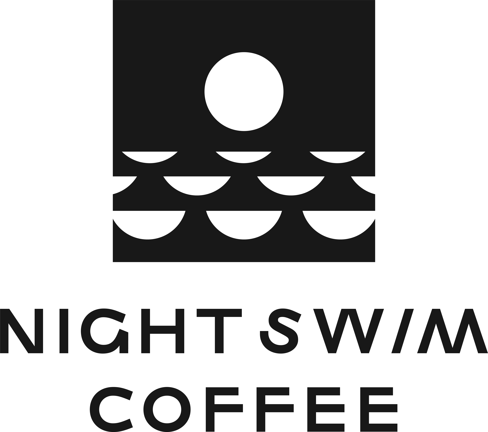

Brand Merchandise · Mockups
TheFestival Merch
Merch · Drinkware
4 oz Paper Cup
Single-wall kraft cup with a black sip lid for the pour stations. The crown crest badge sits front and centre; a blacked-out run covers the espresso bar.

Presented byNight Swim Coffee
01 — Kraft
Single wall · crest badge

02 — Black
Single wall · circular stamp
Merch · Carry
Tote Bag
12 oz natural cotton canvas with the full tagline badge screened large on the front, the Night Swim Coffee lockup credited beneath. A forest run for the second drop.

Presented by

01 — Natural Canvas
Tagline badge · front
Presented by

02 — Forest
Circular stamp · front
Merch · Apparel
T-Shirt
Oversized heavyweight cotton in navy and white. A small circular stamp on the left chest; the stacked wordmark and dictionary line printed large across the back.
01 — Navy · Front
Left-chest stamp
The
Charlotte
TCCoffeeCF
Festival
An annual celebration of coffee
and the people that shape it.
and the people that shape it.
02 — Navy · Back
Stacked wordmark

03 — White · Front
Left-chest stamp
The
Charlotte
TCCoffeeCF
Festival
An annual celebration of coffee
and the people that shape it.
and the people that shape it.
04 — White · Back
Stacked wordmark